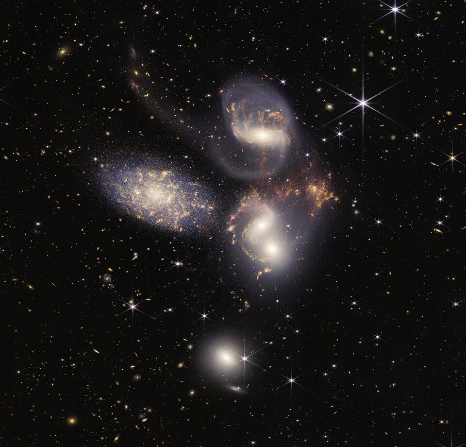

Galaxy collisions
When two galaxies meet, their stars hardly ever collide, but the gas bursts into millions of new stars.


Galaxies are not still: they move, attract each other and often collide. In fact, colliding and merging is the main way they grow. Our own Milky Way is the result of many mergers over billions of years.
A crash without impacts
Violent as it sounds, when two galaxies collide their stars almost never touch. The distance between stars is so vast that if the Sun were a tennis ball in Madrid, the nearest star would be another tennis ball in Lisbon. The galaxies pass through each other like two swarms.
What does collide is the gas. Clouds are squeezed and heated, forming new stars at hundreds of times the normal rate: a starburst. Gravity stretches the galaxies and tears off long tidal tails of stars and gas that can reach hundreds of thousands of light years.
The Antennae
Forty-five million light years away, two spiral galaxies have been colliding for a few hundred million years. Through a small telescope their two long tidal tails look like an insect's antennae. At their centre, Hubble has found more than a thousand clusters of bright young stars formed by the crash.
Stephan's Quintet
Five galaxies seemingly huddled together in the constellation Pegasus, discovered by Édouard Stephan in 1877. Four of them form a genuinely interacting group; the fifth is much closer to us and only lies along the same line of sight. It was one of the James Webb telescope's first images, in July 2022.


How a collision ends
After several passes, which can take hundreds of millions of years, the galaxies end up merged into one, usually a large elliptical. The black holes at their centres also sink towards the middle and eventually merge, releasing a torrent of gravitational waves.
Our turn
The Milky Way is currently swallowing dwarf galaxies, like the one in Sagittarius. And in the distant future it may collide with Andromeda. If it does, the night sky of a hypothetical inhabitant of Earth would fill for millions of years with new nebulae and brilliant stars.
Videos to understand it better
- Galaxies, part 1: Crash Course Astronomy #38CrashCourse · 1.7M views
- The Andromeda-Milky Way CollisionPBS Space Time · 1.7M views
Videos are from YouTube and belong to their creators. They only load when you click them. See all videos →